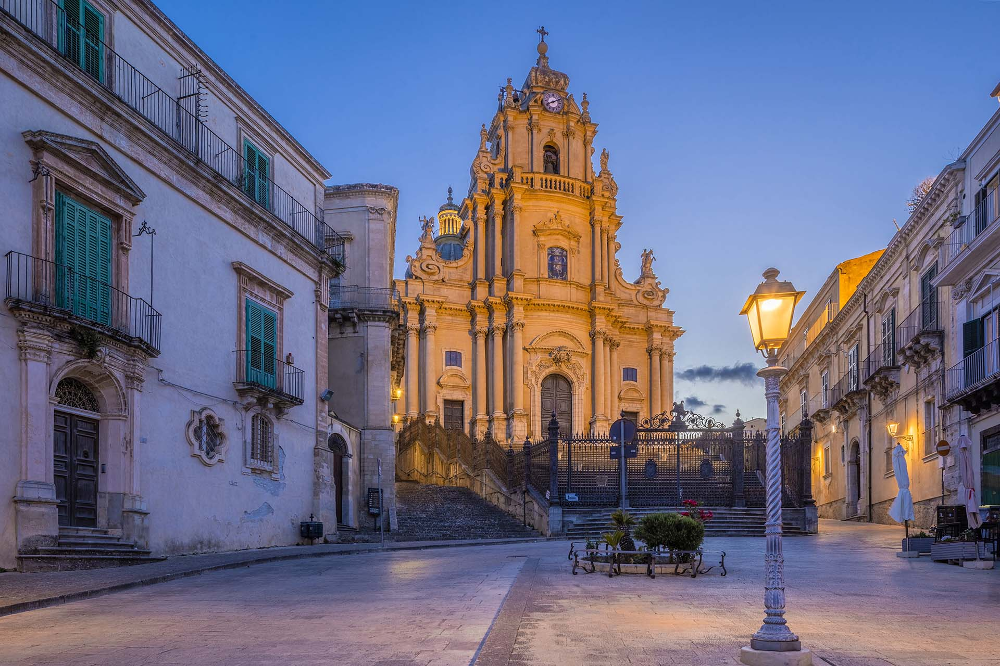
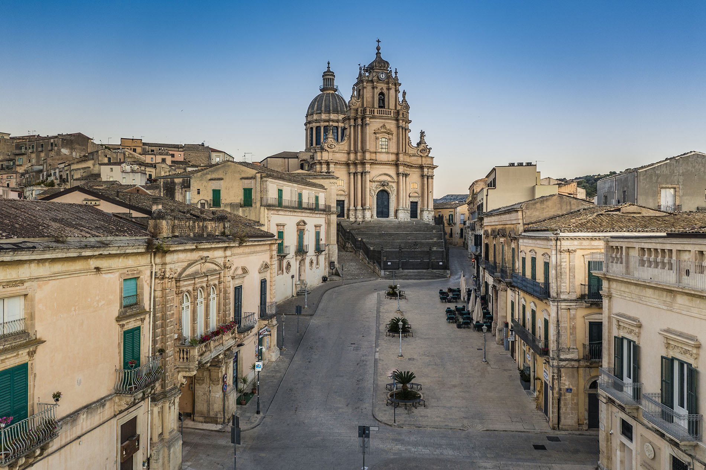

Ragusa Ibla
Nel cuore della città vecchia, Ragusa Ibla, si apre una delle piazze più affascinanti e scenografiche del Barocco siciliano. A differenza delle classiche piazze pianeggianti, Piazza Duomo si sviluppa su un terreno in leggera pendenza, trasformando un limite geografico in un capolavoro di design urbano che culmina nella grandiosa facciata della Cattedrale di San Giorgio. Il pezzo forte è il Duomo di San Giorgio, opera del celebre architetto Rosario Gagliardi. La sua particolarità architettonica risiede nella posizione: la chiesa non è allineata frontalmente alla piazza, ma è leggermente ruotata verso sinistra, un accorgimento studiato per esaltarne la maestosità e renderla visibile anche dalle strette viuzze laterali.

La piazza è cinta da edifici che raccontano la storia delle grandi famiglie ragusane. I palazzi nobiliari che ne delimitano il perimetro sono caratterizzati da balconi in pietra sorretti da mascheroni grotteschi, fiori e figure mitologiche, che sembrano osservare i passanti dall'alto. Questa cornice trasforma la piazza in un vero e proprio "scrigno di pietra", dove ogni dettaglio decorativo ha una storia da raccontare.

A pochi minuti di cammino da Piazza Duomo, percorrendo le caratteristiche stradine in discesa, si raggiunge il Giardino Ibleo, il polmone verde della città vecchia. Costruito nel XIX secolo per volontà dei nobili locali, è uno dei parchi pubblici più suggestivi della Sicilia.
La caratteristica più suggestiva di questa piazza è il modo in cui interagisce con la luce. Essendo costruita con la tipica pietra calcarea locale, durante il giorno la piazza appare quasi bianca, ma con il calare del sole assume tonalità calde, che vanno dall'ambra al miele. Grazie alla pendenza del terreno, camminando dal basso verso l'alto, la prospettiva della facciata di San Giorgio sembra mutare continuamente, regalando una sensazione di movimento e grandiosità.